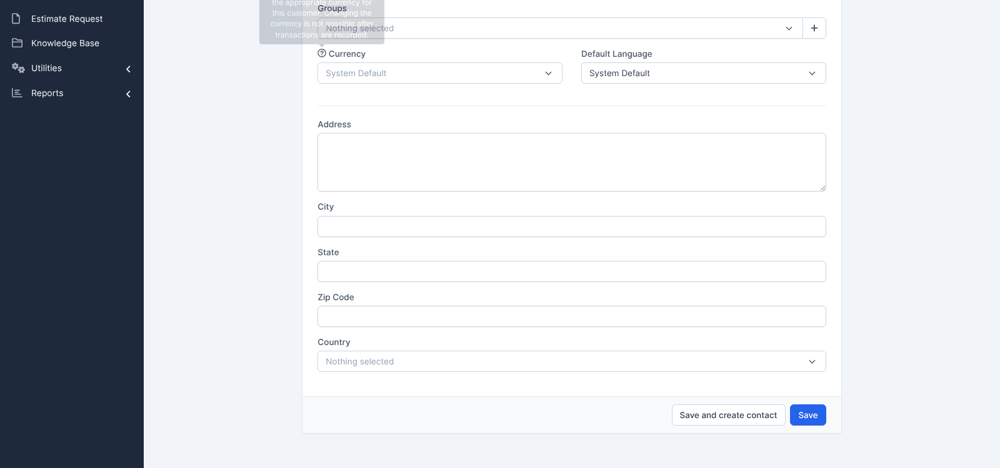

| Thông tin | Nội dung |
|---|---|
| Run ID | run_1791988426 |
| Nền tảng | web |
| Loại nguồn | Bộ TC |
| Nguồn TC | docs/testcases/customers/web/parts/part_01_web_smoke.md |
| Phạm vi | 10 TC đầu chưa chạy: CRM_CUST_TC_001 → CRM_CUST_TC_010 (kế hoạch chạy 10 TC/ngày). Loại 0 TC @Deprecated. Login: 51/51 TC đã có kết quả ở các lần chạy trước → không còn TC chưa chạy; Customers: 0/129 TC đã chạy trước đó |
| Môi trường | https://crm.anhtester.com — Perfex CRM demo (dùng chung) |
| Build / Version | Không có thông tin |
| Tài khoản | Admin (EMAIL_ADMIN trong biến môi trường — không ghi mật khẩu) |
| Người thực hiện | Agent chạy theo lịch (scheduled routine) |
| Bắt đầu → Kết thúc | 14-10-2026 14:33 → 14:34 (giờ máy chủ UTC) |
| Môi trường dùng chung? | Có — auto-skip TC phá huỷ đang BẬT (10 TC này không có TC phá huỷ) |
⚠️ Ngoại lệ so với Browser Rules: Playwright MCP không khởi động được trong môi trường cloud (thiếu Google Chrome:Chromium distribution 'chrome' is not found), và container không có màn hình để chạy headed. Lần chạy này dùng Chromium headless của Playwright, viewport1600×750, thao tác theo đúng từng bước TC bằng script, đối chiếu Expected qua DOM + màu/vị trí thực tế; các điểm nghi ngờ được xác nhận lại bằng ảnh chụp. Không cóbrowser_snapshotcủa MCP. Đề nghị chạy lại các TC giao diện (TC_002, 003, 005–007) trên headed khi có máy.
| Trạng thái | Số lượng | Tỷ lệ |
|---|---|---|
| ✅ PASS | 9 | 90.0% |
| ❌ FAIL | 1 | 10.0% |
| ⚠️ BLOCKED | 0 | 0% |
| ⏭️ SKIPPED | 0 | 0% |
| Tổng | 10 | 100% |
Pass rate (không tính SKIPPED): 9/10 = 90.0%. Tiến độ Customers: 10/129 TC đã chạy.
| TC ID | Test Scenario | Kết quả | Bước fail | Ghi chú |
|---|---|---|---|---|
| CRM_CUST_TC_001 | Mở màn hình danh sách khách hàng bằng mọi lối vào | ✅ PASS | — | Cả 2 biến thể a b; 🔧 HTTP 200 + class clients đạt |
| CRM_CUST_TC_002 | Thanh công cụ và khối Customers Summary | ✅ PASS | — | 5 mục bảng kiểm đạt; Total = Active + Inactive (2774 = 2765 + 9) |
| CRM_CUST_TC_003 | Bảng danh sách đúng cấu trúc cột và trạng thái mặc định | ✅ PASS | — | 6 mục đạt; ô 1 tô xanh xác nhận bằng ảnh |
| CRM_CUST_TC_004 | Dữ liệu hiển thị đúng định dạng, rê chuột hiện thao tác nhanh | ✅ PASS | — | Tiền đề tự dựng: Auto_CUST_TC004_1791988426 (Phone 0901234567) thay cho dữ liệu mẫu trong TC; đã xoá |
| CRM_CUST_TC_005 | Biểu mẫu thêm khách hàng đủ thành phần | ✅ PASS | — | 🔧 autofocus="1", POST đạt |
| CRM_CUST_TC_006 | Các ô chọn ở trạng thái mặc định | ❌ FAIL | 🔧 Ghi chú kỹ thuật | Chỉ phần 🔧 lệch — xem chi tiết #1. 6 mục bảng kiểm chính đều đạt |
| CRM_CUST_TC_007 | Tab Billing & Shipping hiển thị đủ hai khối địa chỉ | ✅ PASS | — | Chú giải Shipping đúng nguyên văn |
| CRM_CUST_TC_008 | Mở biểu mẫu thêm khách hàng bằng mọi lối vào | ✅ PASS | — | Cả 2 biến thể a b |
| CRM_CUST_TC_009 | Tạo khách hàng chỉ với Company | ✅ PASS | — | Tạo thành công, mở hồ sơ #{id} <tên>, đã xoá, tìm lại No matching records found |
| CRM_CUST_TC_010 | Tạo khách hàng đầy đủ rồi mở lại đối chiếu | ✅ PASS | — | 12 ô Customer Details + 10 ô billing/shipping đúng từng ký tự; nhóm đã chọn 123 |
| REQ ID | REQ-CUST-28, REQ-CUST-30, REQ-CUST-31, REQ-CUST-32, REQ-CUST-84 |
| Priority | Medium |
| Bước fail | Phần 🔧 Ghi chú kỹ thuật (bảng kiểm 1–6 đều đạt) |
| Expected | Số <option>: groups_in[] 305 · default_currency 3 · default_language 27 · country 251; Vietnam = 243 |
| Actual | groups_in[] = 311; các số còn lại và Vietnam = 243 khớp |
| Nhận định | Số nhóm khách hàng là dữ liệu dùng chung, người khác thêm được (chênh +6 so với lúc viết TC) — nhiều khả năng TC hard-code số thay đổi được, không phải lỗi hệ thống. Không báo bug; đối chiếu lại TC |
| Evidence |  |
| Tái hiện được? | Có — lần chạy thử trước đó cũng ra 311 |
Không có.
| Dữ liệu | Nơi tạo | Đã xoá? |
|---|---|---|
| Auto_CUST_TC004_1791988426 | /admin/clients/client | ✅ |
| Auto_CUST_TC009_1791988426 | /admin/clients/client | ✅ |
| Auto_CUST_TC010_1791988426 | /admin/clients/client | ✅ |
Đối chiếu số liệu hệ thống:Total/Active/Inactive Customerstrước 2774/2765/9 → sau 2774/2765/9 ✅. Lần chạy thử đầu (cùng ngày, trước run này) tạo và xoá 3 bản ghi tương tựAuto_CUST_TC00x/010_1791988273; số liệu cuối khớp nên coi như đã dọn.
• FAIL #1 → không /create-bug-report; dùng /review-testcases mode FIX để bỏ/nới con số 305 ở phần 🔧 của TC_006.
• Ngày kế tiếp: chạy CRM_CUST_TC_011 → CRM_CUST_TC_020 (còn 119 TC Customers chưa chạy).
• Cần sửa Playwright MCP trong môi trường cloud (cài Chrome hoặc trỏ executablePath Chromium) để chạy headed/snapshot đúng quy định.